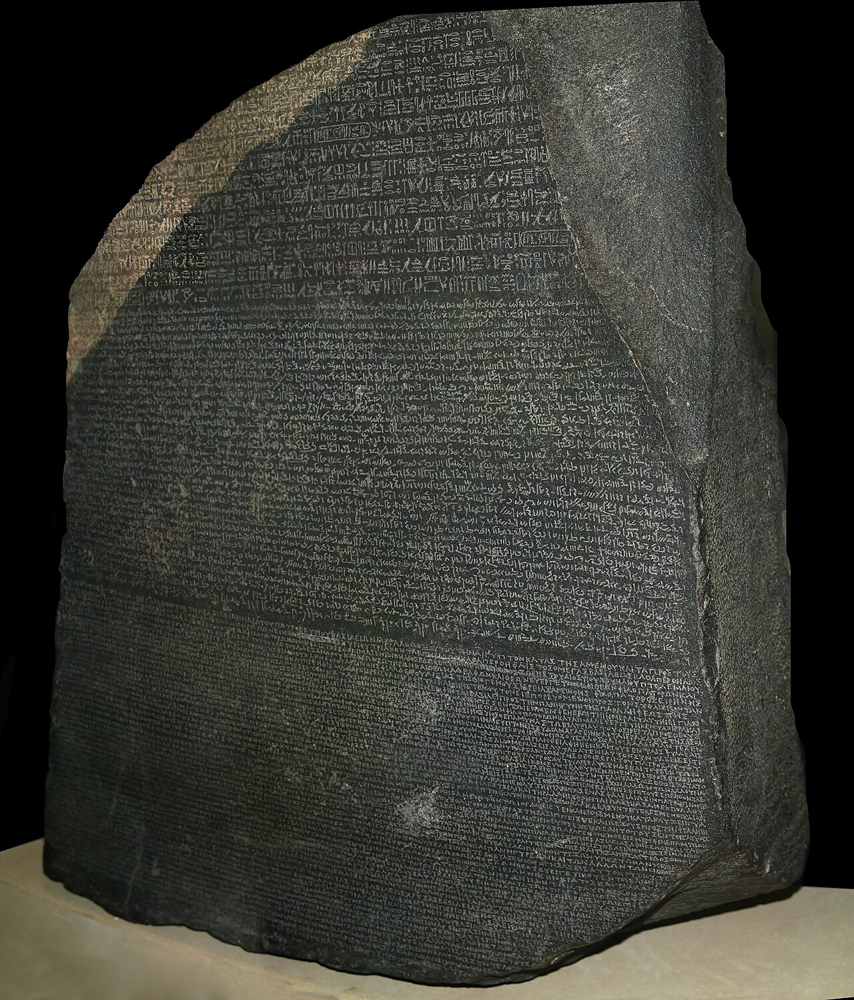
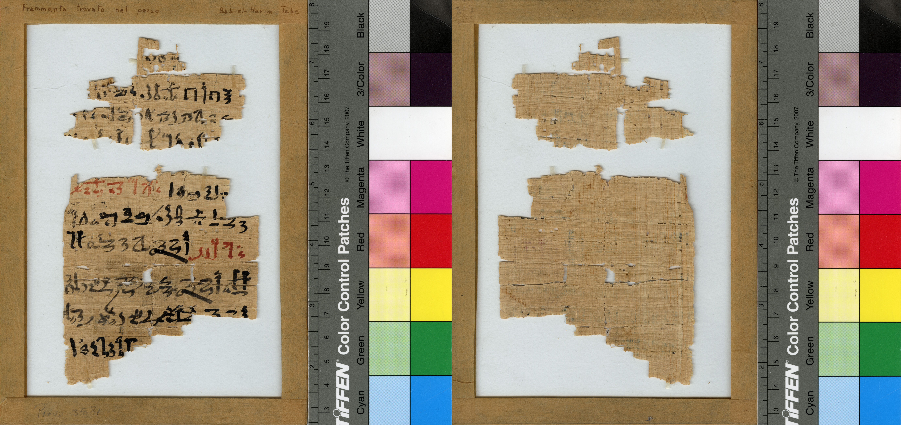
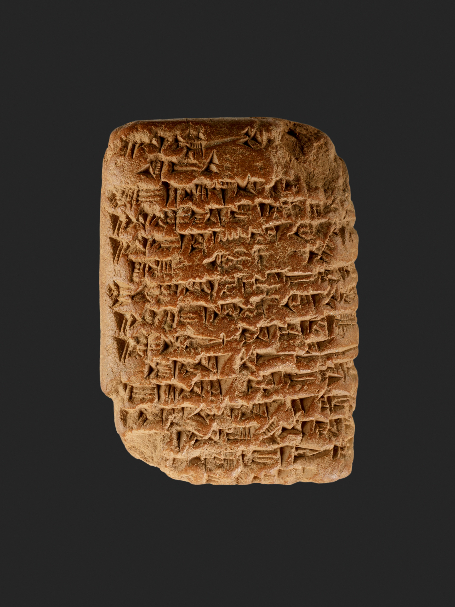
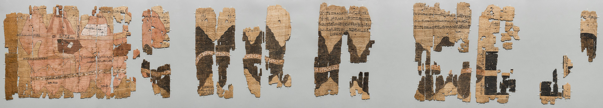
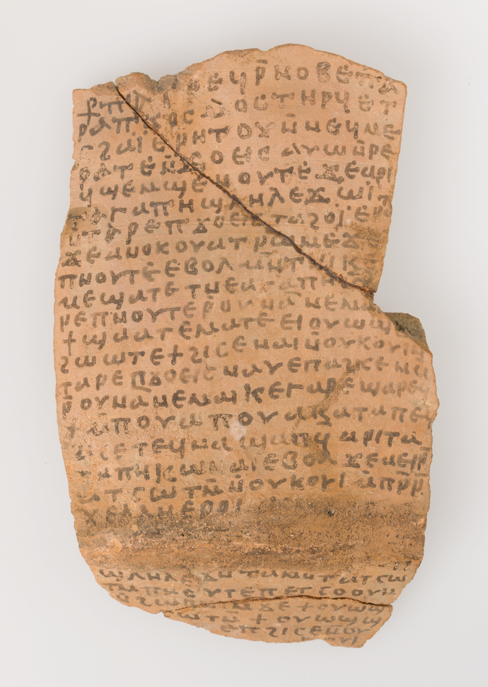
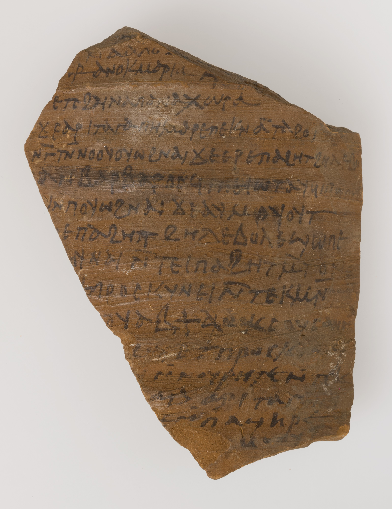
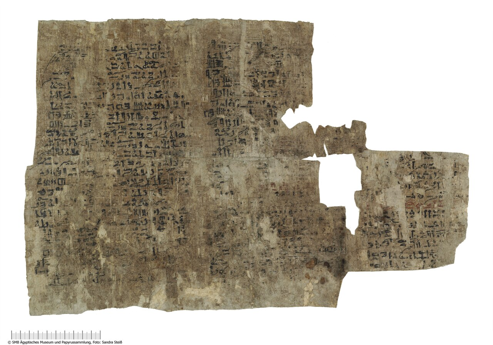

Deir el-Medina village survey ↗
The IFAO excavation team’s topographical plan locates the settlement’s surviving houses and structures.
Deep dives / Africa & Middle East
A father lobbies for his son to become a scribe by making a coppersmith’s job sound terrible. A tomb worker’s absence goes into a register in red ink. A tax collector writes a receipt for a pigeon house. Follow such records and the writing systems that carried them along the Nile, then read surviving originals alongside their English translations.
Writing in Egyptian from the late fourth millennium BCE to late antiquity, with examples of Greek and Akkadian in multilingual Egypt and the continuing use of Coptic in worship.

Modern Nile Valley, Fayum and Delta terrain. Pins represent approximate localities and may mark a find, an archive or a documented episode.
Late fourth millennium BCE
Early inscribed labels survive among the burial goods at Abydos. The pin marks the royal cemetery area. [1] [2]
26.17°, 31.89°Late third millennium BCE
Hieroglyphic Pyramid Texts were carved in the burial chamber of Unas at Saqqara. [3]
29.87°, 31.22°Fourteenth century BCE
Cuneiform tablets from the royal archive attest to court correspondence in Akkadian and other languages. [4]
27.64°, 30.90°Late New Kingdom
Writing on limestone chips and papyrus records the lives of families in the royal tomb workers’ village. [5]
25.73°, 32.60°Principally second century CE
Excavated temple-area manuscripts preserve Egyptian scripts and Greek side by side. [6]
29.11°, 30.75°1799 CE
Approximate city location. The Rosetta Stone was found at a fort near Rashid. [7] [8]
31.41°, 30.42°1801 CE
Approximate city location associated with the imperial transfer of the Rosetta Stone. [9]
31.20°, 29.92°394 and 452 CE inscriptions
The last known dated hieroglyphic and Demotic inscriptions were made at Philae. The pin marks the temple complex after its relocation to Agilkia Island. [10] [11]
24.02°, 32.88°At the cemetery of Umm el-Qa’ab near Abydos, excavators found small perforated labels with incised signs in the late fourth-millennium BCE Tomb U-j. They are among the earliest surviving evidence for Egyptian writing. Some signs resemble later hieroglyphs, but a label offers much less language to work with than a letter. Scholars differ on how fully those early marks encoded speech and what the labels identified. [1] [2]
By the late third millennium BCE, the pyramid of Unas at Saqqara had a burial chamber covered in spells for the deceased king. The surviving Pyramid Texts from Unas are the earliest known examples of that corpus. Their setting shows one purpose of putting words on stone, while the Abydos labels show that portable objects were part of Egyptian written culture from early on. [3] [2]
Hieroglyphs are the familiar picture-shaped signs of temple walls and tombs. A sign might record a consonant or group of consonants, stand for a word, or classify a word written alongside it. A reader could use the picture to recognize a sign while reading the sounds or meaning that the script assigned to it. Hieroglyphs could also be drawn in ink. [12] [13]
Hieratic was the quickly written companion to hieroglyphs. Different hands suited letters, accounts, teaching texts or ritual books. A scribe could brush it onto papyrus or write a short message on a chip of limestone or a broken pot. Later, priests retained hieratic for some religious writing while Demotic became the usual script for many contracts and accounts. [14] [12]
Demotic took shape in the first millennium BCE. It names both a highly cursive script and a later stage of Egyptian. Business and legal records survive in it, along with fiction, ritual and scholarship. Greek was used alongside Egyptian in the Ptolemaic and Roman periods. The second-century CE temple library at Tebtunis preserves Greek beside hieroglyphic, hieratic and Demotic texts. [11] [6]
Coptic names the latest stage of the Egyptian language and the alphabet used to write it. That alphabet uses Greek letters plus signs derived from Demotic for Egyptian sounds Greek could not readily represent. Experiments in writing Egyptian with Greek letters predate the widespread use of Coptic in late antiquity. Coptic preserved letters and accounts as well as Christian texts, and it is still used in worship. [12] [15] [16]
Old, Middle and Late Egyptian usually refer to stages of the language. A script is the set of signs used to write it. Middle Egyptian outlived its main period as a spoken form and remained in use for formal and religious texts. A tax receipt and a temple inscription made in the same century could use different scripts and different varieties of Egyptian. [12] [14] [11]
The Amarna archive widens the picture. In the fourteenth century BCE, the Egyptian court received letters from other rulers on clay tablets. Most of these letters used Akkadian written in cuneiform. At the far end of the map and nearly two millennia later, people still incised Egyptian signs at Philae. The latest known dated hieroglyphic graffito there is from 394 CE and the latest dated Demotic graffito from 452 CE. These dates record surviving inscriptions, while the language continued in Coptic. [4] [10] [11] [12]
Heqanakht’s family letter reads like a long-distance meeting about the household budget. After a low Nile flood, the priest explains his decision to cut rations and tells the people managing his property how to distribute grain. A different letter from western Thebes directs the recipient to leave Sihathor out of a distribution. The papyrus is damaged, and the identity of the thing being handed out remains uncertain. [17] [18] [19]
Other records put a price on a bull, request a particularly good bird or document a tax on a pigeon house. The bull’s price was reckoned in copper rings, while the transaction included goods such as linen and oil. The pigeon-house receipt names several women together and accounts for a surcharge. Centuries later, letters in Coptic carried an appeal from two women to a hermit, a request for two donkeys and a message instructing a deacon to give lentils to the bearer of the potsherd. [20] [14] [21] [22] [23] [16]
The craftspeople living at Deir el-Medina carved and decorated royal tombs. Their settlement and work sites generated records about shifts, supplies, deliveries, debts and disputes. Offcuts from the building work gave writers an inexpensive surface. The register below is exceptional for its size, with black ink for names and dates and red for the reasons people missed work. [5] [24] [25]
During the reign of Ramesses III, the crew stopped work over late food rations. The scribe Amunnakht documented their actions, including sit-ins at funerary temples and a demand that the officials report their case. An attendance clerk and a strike chronicler can record the same workforce from very different positions. [24] [26]
Some reasons for absence were other work. One man was carrying stones for a scribe. Another visited people and prepared remedies. Entries about illness, a scorpion sting and brewing beer point to the work and obligations that could keep a person away from the tomb. A separate inventory records furniture, cloth and oil, while an annotated map shows the houses of goldworkers near roads, mountains and a temple in the Eastern Desert. [24] [27] [28] [29]
The Teaching of Khety stages a father’s argument for sending his son Pepy to writing school. It exaggerates the grime and discomfort of other jobs to make a scribe’s career sound appealing. Surviving copies and extracts show that scribes kept circulating the joke. A familiar-sounding household request can amuse a modern reader, while Khety’s comparisons are deliberately extravagant. [30] [25]
Love songs circulated on papyrus and ostraca. Their speakers can turn the physical landscape into a test of devotion. The poem below makes the Nile crossing both dangerous and possible: the crocodile shrinks in the speaker’s imagination as he presses on. [31]
The Tale of the Shipwrecked Sailor lets a long adventure and an encounter with a giant serpent end in a sharp exchange between two people who have returned from a mission. In another collection of stories, preserved on the Westcar Papyrus, the young royal storyteller Khafra entertains his father with the tale of a magician who makes a tiny wax crocodile come to life. Tales like these were copied and transmitted alongside much more practical records. [32] [33] [13]
Different kinds of writing survive in different concentrations. At Saqqara an inscription can still be read in its architectural setting. The Met’s Theban archive of Heqanakht was excavated from a burial, with some sheets still folded and sealed. Other records reached modern collections through dealers and have less secure findspots. The Deir el-Medina absence register is attributed to that village from its contents, including the people it names. [3] [18] [24]
The registers and scraps give access to particular literate communities and to people who could ask someone else to write. The distinction matters when a text seems to speak directly: Amunnakht transmits demands voiced by workers, a receipt records several women as taxpayers, and the love poem presents a speaker whose name is unknown. Read each source for who spoke, who took down the words and why the object was kept or discarded. [26] [21] [31] [13]
Open the source maps for their original detail, legends and dates. Their coverage and reproduction terms belong to the issuing institution.
The IFAO excavation team’s topographical plan locates the settlement’s surviving houses and structures.
The Egyptian Ministry of Tourism and Antiquities links a virtual visit to the pyramid and its inscription-covered burial chamber.
Durham University’s archaeological survey places modern Rashid and Fort Qaitbey in the landscape of the Delta.
Payments, animals, deliveries, disputes, household instructions and the occasional celebration. Originals appear as artifact photographs or credited original-language transcriptions; a transcription uses modern type, not an imitation of an ancient hand. Each English excerpt is labeled and linked to its edition.
ca. 1961–1917 BCE · Deir el-Bahri, western Thebes, Egypt
Met 22.3.517
A priest who managed agricultural income writes to his relatives after a poor Nile flood. The letter sets out reduced rations and how the grain is to be distributed.

Open the full-size original image ↗
Photograph of the papyrus. The excerpt belongs to the recto.
The Metropolitan Museum of Art · Original source · CC0 1.0
Look, I have managed to keep you alive so far.
James P. Allen · Read the published translation
Short quotation from the credited published English translation.
Approximate geographical reference: 25.739°, 32.606°. Read the place description for findspot or collection context. A translated excerpt is only part of the witness; consult the edition for uncertain signs, missing passages and alternative readings.
Fifteenth century BCE, Eighteenth Dynasty · Valley of the Queens, western Thebes, Egypt
Museo Egizio P. Turin Provv. 3581
The overseer of the treasury sends distribution instructions, probably concerning preparations for a burial. Damage to the surrounding lines leaves the precise item uncertain.

Open the full-size original image ↗
Published Museo Egizio scan, figure 1, recto and verso. The excerpt is from recto line 5.
Museo Egizio, Turin · Original source · CC BY 2.0
Do not give one to Sihathor.
Kathrin Gabler and Daniel Soliman · Read the published translation
Short quotation from the credited published English translation.
Approximate geographical reference: 25.728°, 32.591°. Read the place description for findspot or collection context. A translated excerpt is only part of the witness; consult the edition for uncertain signs, missing passages and alternative readings.
ca. 1347–1330 BCE · Tell el-Amarna, Egypt
Met 24.2.11 (Amarna letter EA 15)
Aššur-uballiṭ of Assyria sends an envoy and gifts, including a lapis lazuli ornament, to open relations with the Egyptian court. The letter was found in Egypt and records Akkadian.

Open the full-size original image ↗
Clay tablet from the Amarna archive. The excerpt belongs to obverse lines 7–15.
The Metropolitan Museum of Art · Original source · CC0 1.0
a splendid chariot, 2 horses, and 1 date-stone
William L. Moran · Read the published translation
Short quotation from the credited published English translation.
Approximate geographical reference: 27.645°, 30.896°. Read the place description for findspot or collection context. A translated excerpt is only part of the witness; consult the edition for uncertain signs, missing passages and alternative readings.
Twelfth century BCE, year 29 of Ramesses III · Deir el-Medina, western Thebes, Egypt
Museo Egizio Cat. 1880
The royal tomb crew stops work when food rations fall overdue. The scribe Amunnakht records the workers’ demand and the series of protests that followed.

Open the full-size original image ↗
Photograph of the recto, where the first walkout is recorded.
Museo Egizio, Turin · Original source · CC0 1.0
we are hungry!
Museo Egizio exhibition translation, individual translator uncredited · Read the published translation
Short quotation from the credited published English translation.
Approximate geographical reference: 25.728°, 32.601°. Read the place description for findspot or collection context. A translated excerpt is only part of the witness; consult the edition for uncertain signs, missing passages and alternative readings.
Twelfth century BCE, reign of Ramesses IV · Wadi Hammamat, Egypt (area depicted on the map)
Museo Egizio Cat. 1879 + Cat. 1899 + Cat. 1969, recto text 6
A work map places goldworkers’ housing near routes, rock formations and a temple. The papyrus’s connection to Deir el-Medina is likely. The map marker represents the area depicted in the ancient drawing.

Open the full-size original image ↗
Photograph of the recto. The caption is one of several hieratic notes naming places and features.
Museo Egizio, Turin · Original source · CC0 1.0
The houses of the goldworkers settlement
Juan José Archidona Ramírez, Museo Egizio papyrus edition · Read the published translation
Short quotation from the credited published English translation.
Approximate geographical reference: 25.98°, 33.57°. Read the place description for findspot or collection context. A translated excerpt is only part of the witness; consult the edition for uncertain signs, missing passages and alternative readings.
Twentieth Dynasty, probably reign of Ramesses VII · Western Thebes, Egypt (probable origin)
Museo Egizio Cat. 1883 + Cat. 2095
The damaged list also covers cloth, copper, oil and containers. The papyrus was probably written by someone in the Deir el-Medina community, though the exact find circumstances are unknown.

Open the full-size original image ↗
Published scan, figure 6, recto. The entry is in the second column, line 3.
Museo Egizio, Turin and Martina Landrino (digital processing) · Original source · CC BY 2.0
Bed, 1
Martina Landrino · Read the published translation
Short quotation from the credited published English translation.
Approximate geographical reference: 25.728°, 32.601°. Read the place description for findspot or collection context. A translated excerpt is only part of the witness; consult the edition for uncertain signs, missing passages and alternative readings.
196 BCE · Qaitbay Fort near Rashid, Egypt (find area)
British Museum EA24
A council of priests issued the decree at Memphis. Its closing instruction explains why the stone carries the same decree in three scripts. The fort where it was recovered was built centuries later.

Open the full-size original image ↗
The English is from the Greek version near the bottom. The photograph also shows the two Egyptian registers above it.
Donald Macbeth, published by the British Museum in 1922 · Original source · Public domain
native [that is demotic] and Greek characters
Carol Andrews · Read the published translation
Short quotation from the credited published English translation.
Approximate geographical reference: 31.44°, 30.39°. Read the place description for findspot or collection context. A translated excerpt is only part of the witness; consult the edition for uncertain signs, missing passages and alternative readings.
March–April 108 BCE · Pathyris, Gebelein, Egypt
Museo Egizio O. dem. Suppl. 12791 (TM 44876)
A collector issues one written receipt to several women who paid for the same property. The ostracon records both the amount and a separate surcharge.

Open the full-size original image ↗
Published photograph, figure 1. The phrase occurs in line 2 of the four-line receipt.
Nicola Dell’Aquila and Federico Taverni / Museo Egizio · Original source · CC BY 2.0
the tax of their pigeon house
Mariantonietta Pascalicchio · Read the published translation
Short quotation from the credited published English translation.
Approximate geographical reference: 25.481°, 32.49°. Read the place description for findspot or collection context. A translated excerpt is only part of the witness; consult the edition for uncertain signs, missing passages and alternative readings.
580–640 CE · Thebes, Egypt (collection context)
Met 12.180.174
The practical request comes in a letter full of greetings, apologies and requests for prayer. Joseph needs pack animals to bring fodder.

Open the full-size original image ↗
Pottery fragment with the original inked letter.
The Metropolitan Museum of Art · Original source · CC0 1.0
Send me two asses that I may get fodder with them.
Metropolitan Museum of Art catalogue, translator uncredited · Read the published translation
Short quotation from the credited published English translation.
Approximate geographical reference: 25.733°, 32.606°. Read the place description for findspot or collection context. A translated excerpt is only part of the witness; consult the edition for uncertain signs, missing passages and alternative readings.
Probably early seventh century CE · Thebes, Egypt (collection context)
Met 12.180.151
Maria and Susanna use the same fragment to contact the hermit Panachora. Their appeals survive in separate hands on the sherd, together with damaged references to family members.

Open the full-size original image ↗
Photograph of the surviving potsherd bearing both women’s writing.
The Metropolitan Museum of Art · Original source · CC0 1.0
Be so good, let thy compassion reach me
Metropolitan Museum of Art catalogue, translator uncredited · Read the published translation
Short quotation from the credited published English translation.
Approximate geographical reference: 25.733°, 32.606°. Read the place description for findspot or collection context. A translated excerpt is only part of the witness; consult the edition for uncertain signs, missing passages and alternative readings.
Seventh century CE · Western Thebes, Egypt (probable origin)
IFAO OC 104 (C 1916), line 9
Psmoei gives the inscribed sherd to a messenger and asks a deacon to give the messenger lentils. The verb here follows an appeal to make sure the messenger receives them.
Ancient Sahidic Coptic text from line 9, letterforms normalized to Unicode, with editorial diacritics omitted.
Ahmed Nakshara, editor of the IFAO ostracon · Original source · Public domain ancient text
giving the measure (oipe) of lentils to him
Ahmed Nakshara · Read the published translation
Short quotation from the credited published English translation.
Approximate geographical reference: 25.728°, 32.601°. Read the place description for findspot or collection context. A translated excerpt is only part of the witness; consult the edition for uncertain signs, missing passages and alternative readings.
Second Intermediate Period, Seventeenth Dynasty manuscript · Egypt (findspot unrecorded, map marker locates Khufu’s pyramid at Giza)
Ägyptisches Museum und Papyrussammlung, Berlin P 3033
Khafra entertains his father Khufu with a story about a magician. The miniature crocodile springs to life in the magician’s lake. The manuscript substantially postdates the kings in the story.

Open the full-size original image ↗
Museum photograph of original columns I–III, displayed as a resized Commons preview.
Staatliche Museen zu Berlin, Ägyptisches Museum und Papyrussammlung / Sandra Steiß · Original source · CC BY-SA 4.0
he fashioned a crocodile of wax, seven fingers long
W. M. Flinders Petrie · Read the published translation
Historical public-domain English translation first published in 1895.
Approximate geographical reference: 29.979°, 31.134°. Read the place description for findspot or collection context. A translated excerpt is only part of the witness; consult the edition for uncertain signs, missing passages and alternative readings.
Explore all original texts and translations →
Open this era on global Explore ↗ Open Africa & Middle East atlas ↗ Climate, sea level & ice-sheet context ↗
Sources checked and linked above; geological and historical dating methods follow the primary papers.


_-_Museo_Egizio_Turin_C_1879_1969_1899_p01.jpg){kind=link}